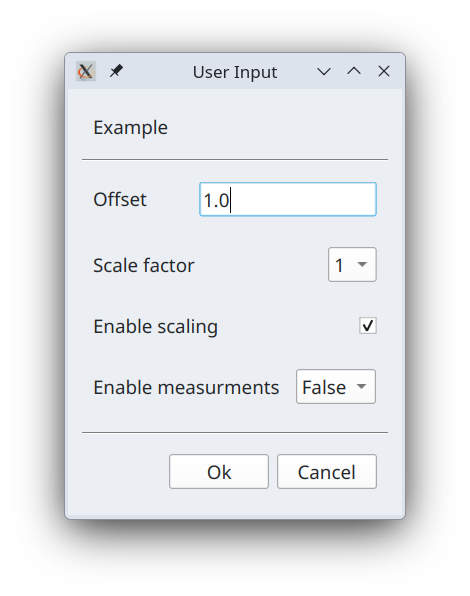

Programming language reference¶
Language used in the code for custom commands is Python 3.13. Below we describe in details additional variables, functions and objects available to developer of the custom commands that aid access to the I2C devices and their registers.
Variables¶
__project_name__¶
Variable that holds name of the current project.
__command_name__¶
Variable that holds name of the command that is executing.
__device_address__¶
Integer variable that holds i2c device address as selected in the GUI.
Objects¶
ctx¶
Context object that persists across the project session. Project session refers to a
time duration when a given project is active. That is for example from the moment
application starts and previously loaded project is loaded again until either application
closes or user opens another project. Context object can be used to store arbitrary
variables and functions which become available to all defined custom commands. Assigning
arbitrary variable in the context ctx creates it and attempts to access variable before it is being
assigned return None.
ctx.OSR = [1, 2, 4, 8, 16, 32, 64]
dut¶
Device Under Test (aka DUT) object that use to access register and theirs field as defined in the RegList. For example
dut.OSR_CONFIG # the whole register
dut.OSR_CONFIG.osr_p # field osr_p in the OSR_CONFIG register
Normal register fields are always interpreted as number according the fixed point number
definition in the register model in RegList. To access raw BitArray for a given field
append _raw prefix.
dut.OSR_CONFIG.osr_p_raw # returns raw BitArray object for a field osr_p
Functions & Classes¶
read(...)¶
This function takes register as an argument, reads register value from the connected device
and updates register with read value. The reason we want to do that is because any register
in the dut object are in memory objects that hold last read or a default value. Calling this
function allows us to update register object in memory with register value as it is present
in the I2C device. This function returns None.
read(dut.OSR_CONFIG)
write(...)¶
This function take register as an argument and writes its in-memory content into the corresponding register on connected I2C device. This function returns None.
write(dut.OSR_CONFIG)
Variable¶
Class Variable is a wrapper over any regular python variable that adds various metadata
that is used to build GUI dialog when method prompt_user(...) is called. Its first
agument is value that is to be wrapped inside of this class. Other two arguments
are optional
valid_values- array of possible values which can be assigned to the value contained inside. If not given, then any value can later be assigned to variable inside.name- user-friendly name associated with this variable.
Variable(1, valid_values=[1, 2, 4, 8, 16], name="Sampling rate")
prompt_user(...)¶
Given its arguments, which are one or more instances of Variable (see above) constructs
and presents GUI input dialog to the user. If user clicks Ok button in the dialog, then it
returns n-tuple of values selected by the user in the order in which Variable objects
were passed to this function.
a, b, c, d = prompt_user(
Variable(1.0, name="Offset"),
Variable(1, valid_values=[1, 2, 4, 8], name="Scale factor"),
Variable(True, name="Enable scaling"),
Variable(False, valid_values=[True, False], name="Enable measurments")
)
Example above build GUI dialog that looks like so

These GUI controls are formed according to the following logic.
if wrapped variable is boolean
if valid_array is given
show drop down box with `True` and `False` choices
else
show checkbox
else if valid_values is given
show drop down box with choices from value_values agument
else if wrapped variable is integer
show text input field and validate and constrain its content to be integer
else if wrapped variable is float
show text input field and validate and constrain its content to be float
else
show text input field with no validation and no contrains on its content
U(n, [BitArray])¶
This function converts list of BitArray objects as one large BitArray into floating point
number according fixed point interpretation U{w}.{n} where {w} width of sum of all
BitArray objects and {n} is $1/2^n$ scaling factor.
temp_C = S(16, [
dut.TEMP_DATA_MSB.temp_23_16_raw,
dut.TEMP_DATA_LSB.temp_15_8_raw,
dut.TEMP_DATA_XLSB.temp_7_0_raw
])
S(n, [BitArray])¶
Same as function U(...) but it interprets combined BitArray as signed number.